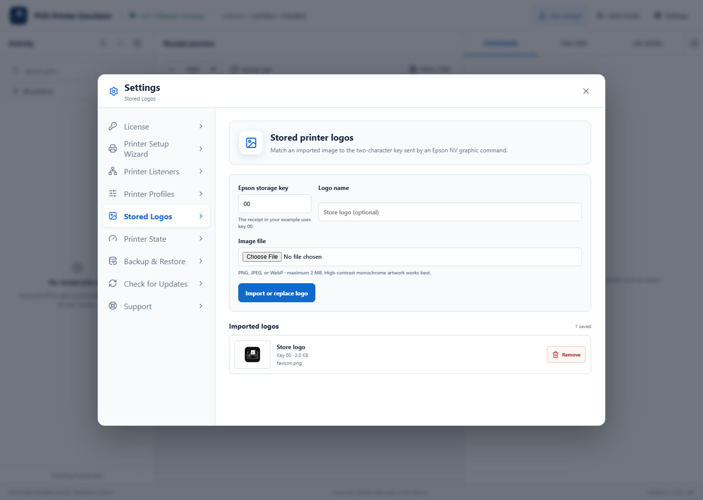
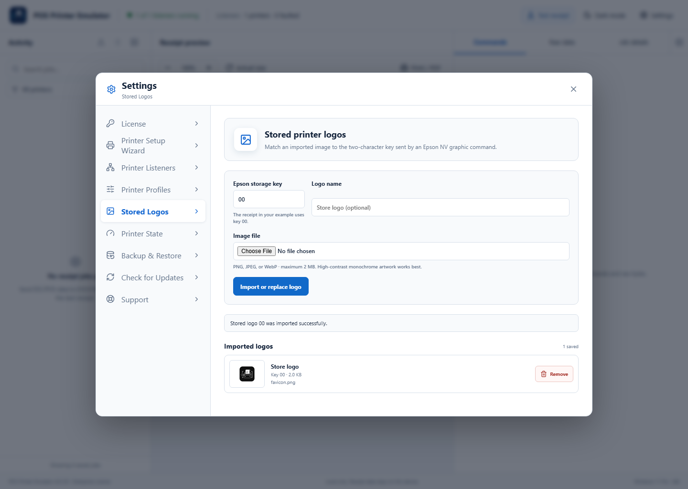

Available with Lite, Pro, and Enterprise. Use high-contrast monochrome artwork for the closest thermal-printer result.
1Find the requested storage key
Open the affected receipt’s Commands tab and find the NV graphic command. Note its two-character storage key, such as 00. Then open Settings → Stored Logos.

2Choose and describe the image
Enter the two-character Epson storage key, add an optional name, and choose a PNG, JPEG, or WebP file no larger than 2 MB. Transparent or white backgrounds and strong black shapes work best.
3Import and retest the receipt
Select Import or replace logo. Confirm the logo appears in Imported logos, then resend or replay the receipt. Use Remove twice to confirm deletion when a mapping is no longer needed.

If the wrong logo appears
- Confirm the receipt requests the same two-character key shown in Stored Logos.
- Replace the mapping with the correct artwork and replay the original capture.
- Check the assigned Printer Profile supports Stored NV graphics.